Decision Tree Classifier
Pengertian Decision Tree Classification¶
Decision tree merupakan suatu metode klasifikasi yang menggunakan struktur pohon, dimana setiap node merepresentasikan atribut dan cabangnya merepresentasikan nilai dari atribut, sedangkan daunnya digunakan untuk merepresentasikan kelas. Node teratas dari decision tree ini disebut dengan root.
Ini memecah dataset menjadi himpunan bagian yang lebih kecil dengan peningkatan kedalaman pohon. Hasil akhirnya adalah pohon dengan simpul keputusan dan simpul daun. Node keputusan (mis., Outlook) memiliki dua atau lebih cabang (mis., Sunny, Overcast, dan Rainy). Node daun (mis., Play) mewakili klasifikasi atau keputusan. Node keputusan teratas dalam pohon yang sesuai dengan prediktor terbaik disebut simpul akar. Pohon keputusan dapat menangani data kategorikal dan numerik.

Jenis Decision Tree¶
- Categorical Variable Decision Tree (Pohon Keputusan Variabel Kategorikal) merupakan pohon keputusan yang memiliki variabel target kategorikal
- Continuous Variable Decision Tree() merupakan Decision Tree yang memiliki variabel target kontinu
Terminologi Penting terkait dengan Decision Tree Classification¶

- Root Node: Ini mewakili seluruh populasi atau sampel dan ini selanjutnya dibagi menjadi dua atau lebih set homogen.
- Splitting: Ini adalah proses membagi sebuah node menjadi dua atau lebih sub-node.
- Decision Node: Ketika sebuah sub-node terbagi menjadi beberapa sub-node, maka itu disebut simpul keputusan (decision node).
- Leaf/ Terminal Node: Node tanpa anak (tanpa pemisahan lebih lanjut) disebut Leaf atau Terminal node.
- Pruning: Ketika kita mengurangi ukuran pohon keputusan dengan menghapus node (kebalikan dari Splitting), proses ini disebut pemangkasan (pruning).
- Branch / Sub-Tree: Subbagian pohon keputusan disebut cabang (Branch) atau sub-pohon.( Sub-Tree)
- Parent and Child Node: Sebuah node, yang dibagi menjadi beberapa sub-node disebut parent node dari sub-node dimana sebagai sub-node adalah anak dari node induk
Kelebihan dan Kekurangan Decision Tree Classification¶
Kelebihan:¶
- Daerah pengambilan keputusan yang sebelumnya kompleks dan sangat global, dapat diubah menjadi lebih simpel dan spesifik.
- Eliminasi perhitungan-perhitungan yang tidak diperlukan, karena ketika menggunakan metode pohon keputusan maka sample diuji hanya berdasarkan kriteria atau kelas tertentu.
- Fleksibel untuk memilih fitur dari internal node yang berbeda, fitur yang terpilih akan membedakan suatu kriteria dibandingkan kriteria yang lain dalam node yang sama. Kefleksibelan metode pohon keputusan ini meningkatkan kualitas keputusan yang dihasilkan jika dibandingkan ketika menggunakan metode penghitungan satu tahap yang lebih konvensional
- Dalam analisis multivariat, dengan kriteria dan kelas yang jumlahnya sangat banyak, seorang penguji biasanya perlu untuk mengestimasikan baik itu distribusi dimensi tinggi ataupun parameter tertentu dari distribusi kelas tersebut. Metode pohon keputusan dapat menghindari munculnya permasalahan ini dengan menggunakan criteria yang jumlahnya lebih sedikit pada setiap node internal tanpa banyak mengurangi kualitas keputusan yang dihasilkan.
Kekurangan:¶
- Terjadi overlap terutama ketika kelas-kelas dan criteria yang digunakan jumlahnya sangat banyak. Hal tersebut juga dapat menyebabkan meningkatnya waktu pengambilan keputusan dan jumlah memori yang diperlukan.
- Pengakumulasian jumlah eror dari setiap tingkat dalam sebuah pohon keputusan yang besar.
- Kesulitan dalam mendesain pohon keputusan yang optimal.
- Hasil kualitas keputusan yang didapatkan dari metode pohon keputusan sangat tergantung pada bagaimana pohon tersebut didesain.
Algoritma Decision Tree Classification¶
- ID3
- Gini Index
- Chi-Square
- Reduction in Variance
Namun disini kita hanya membahan ID3 dan Gini index saja.
ID3¶
Algoritma inti untuk membangun pohon keputusan disebut ID3. Dikembangkan oleh J. R. Quinlan, algoritma ini menggunakan pencarian top-down, melalui ruang cabang yang mungkin tanpa backtracking. ID3 menggunakan Entropy dan Information Gain untuk membuat keputusan
Entropy¶
Pohon keputusan dibangun dari atas ke bawah dari simpul akar (root node) dan melibatkan mempartisi data menjadi subset yang berisi instance dengan nilai yang sama (homogen). Algoritma ID3 menggunakan entropi untuk menghitung homogenitas sampel. Jika sampel benar-benar homogen, entropinya nol dan jika sampel dibagi rata maka entropinya satu.
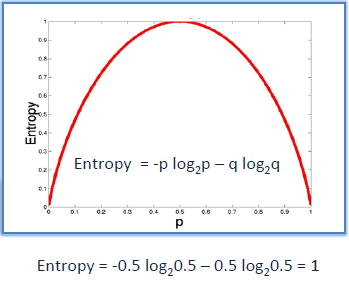
Untuk membangun pohon keputusan, kita perlu menghitung dua jenis entropi menggunakan tabel frekuensi sebagai berikut:
a. Entropy menggunakan tabel frekuensi satu atribut:
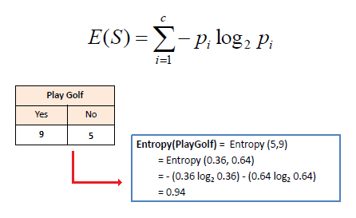
b. Entropi menggunakan tabel frekuensi dua atribut:
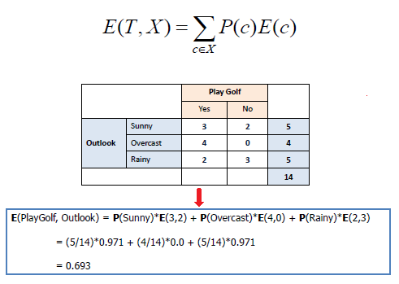
Information Gain¶
Information Gain didasarkan pada penurunan entropi setelah kumpulan data dibagi pada atribut. Membangun pohon keputusan adalah tentang menemukan atribut yang mengembalikan perolehan informasi tertinggi (mis., Cabang yang paling homogen).
Langkah 1: Hitung entropi target.
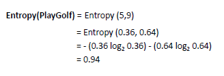
Langkah 2: Kumpulan data kemudian dibagi pada atribut yang berbeda. Entropi untuk setiap cabang dihitung. Kemudian ditambahkan secara proporsional, untuk mendapatkan total entropi untuk pemisahan. Entropi yang dihasilkan dikurangi dari entropi sebelum pemisahan. Hasilnya adalah Information Gain, atau penurunan entropi.
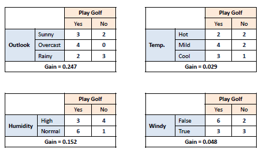
Langkah 3: Pilih atribut dengan perolehan Information Gain terbesar sebagai simpul keputusan (decision node), bagi dataset dengan cabang-cabangnya dan ulangi proses yang sama pada setiap cabang.
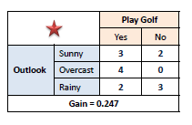
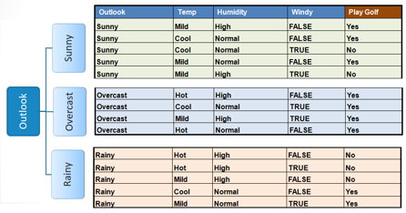
Langkah 4a: Cabang dengan entropi 0 adalah simpul daun.
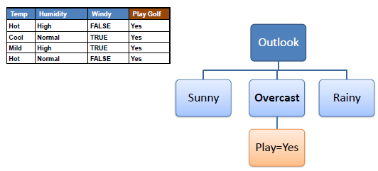
Langkah 4b: Cabang dengan entropi lebih dari 0 membutuhkan pemisahan lebih lanjut
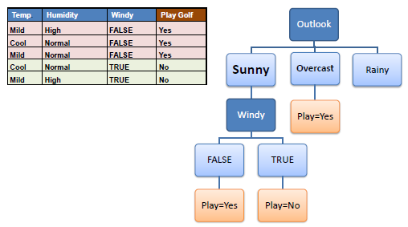
Langkah 5: Algoritma ID3 dijalankan secara rekursif pada cabang-cabang non-daun, sampai semua data diklasifikasikan.
Gini Index¶
Indeks Gini mengatakan, jika kita memilih dua item dari populasi secara acak maka mereka harus dari kelas yang sama dan probabilitas untuk ini adalah 1 jika populasi murni.
- Ia bekerja dengan variabel target kategori "Sukses" atau "Kegagalan".
- Ini hanya melakukan split Biner
- Semakin tinggi nilai Gini semakin tinggi homogenitasnya.
- CART (Klasifikasi dan Pohon Regresi) menggunakan metode Gini untuk membuat pemisahan biner.
Rumus Gini Index¶
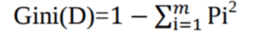
pi adalah probabilitas bahwa sebuah tuple dalam D milik kelas Ci.
Weighted Gini untuk Pemisahan:
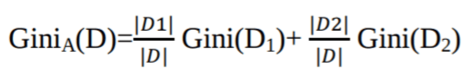
Langkah-langkah untuk Menghitung Gini untuk pemisahan¶
- Hitung Gini untuk sub-node, menggunakan rumus jumlah kuadrat probabilitas untuk keberhasilan dan kegagalan (p² + q²).
- Hitung Gini untuk split menggunakan skor Gini tertimbang dari setiap node dari split itu
Contoh: - Mengacu pada contoh di mana kami ingin memisahkan siswa berdasarkan variabel target (playing criket atau tidak). Dalam snapshot di bawah ini, kami membagi populasi menggunakan dua variabel input Gender dan Class. Sekarang, saya ingin mengidentifikasi split mana yang menghasilkan lebih banyak sub-node homogen menggunakan indeks Gini.
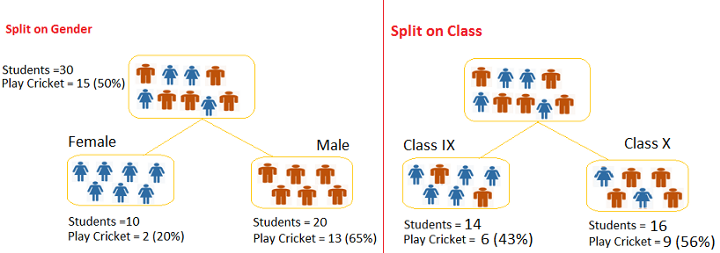
Pemisahan di gender
- Gini untuk sub node Female = (0.43)x(0.43)+(0.57)x(0.57)=0.51
- Gini untuk sub node Male = (0.56)x(0.56)+(0.44)x(0.44)=0.51
- Weighted Gini untuk Pemisahan Gender = (10/30)x0.68+(20/30)x0.55 = 0.59
Pemisahan di class
- Gini untuk sub node Class IX= (0.2)x(0.2)+(0.8)x(0.8)=0.68
- Gini untuk sub node Class X= (0.65)x(0.65)+(0.35)x(0.35)=0.55
-
Weighted Gini untuk Pemisahan Class = (14/30)x0.51+(16/30)x0.51 = 0.51
Implementasi Decision Tree Classification Breast Cancer Wisconsin (Diagnostic) Dataset¶
Kebutuhan Software¶
- Python 3.0 atau versi yang lebih baru, disini saya menggunakan python 3.7
- IDE Pycharm
- Jupyter notebook
Library Python yang digunakan:¶
- Pandas
pandas adalah sebuah librari berlisensi BSD dan open source yang menyediakan struktur data dan analisis data yang mudah digunakan dan berkinerja tinggi untuk bahasa pemrograman Python.
instal pandas:
pip install pandas- Scikit Learn
Machine learning ada yang berbasis statistika ada juga yang tidak. Salah satunya adalah support vector machine dan regresi linier. Mungkin bagi sebagian orang sudah biasa menulis sendiri library untuk implementasi kedua algoritma tadi. Tapi untuk membuatnya dalam waktu singkat tentu butuh waktu yang tidak sedikit pula.
Scikit-Learn memberikan sejumlah fitur untuk keperluan data science seperti:
- Algoritma Regresi
- Algoritma Naive Bayes
- Algoritma Clustering
- Algoritma Decision Tree
- Parameter Tuning
- Data Preprocessing Tool
- Export / Import Model
- Machine learning pipeline dan lainnya
instal Scikit Learn :
pip install scikit-learn- graphviz
kitadapat menggunakan fungsi Scikit-learn export_graphviz untuk menampilkan pohon di dalam notebook Jupyter. Untuk merencanakan pohon, Anda juga perlu menginstal graphviz dan pydotplus
instal menggunakan pip:
pip install graphvizInstal menggunakan conda:
conda install -c conda-forge graphviz- pydotplus
PyDotPlus adalah versi perbaikan dari proyek pydot lama yang menyediakan Antarmuka Python ke bahasa Dot Graphviz
pip install pydotplusInstal menggunakan conda:
conda install -c conda-forge pydotplus Import Library yang dibutuhkan¶
import pandas as pd
from sklearn.model_selection import train_test_split
from sklearn import metrics #importing modul metrik
from sklearn.tree import DecisionTreeClassifier
from sklearn.tree import export_graphviz
from sklearn.externals.six import StringIO
from IPython.display import Image
import pydotplusMemuat Dataset¶
Mengimport dataset yang digunakan untuk pengimplemtasian K-Nearest Neighbor
dataset bisa didownload disini atau langsung dari kaggle disini
# Memuat dataset
data = pd.read_csv("E:\Semester 4\data mining/bc.csv",encoding = "ISO-8859-1")Data Preprocessing¶
Menampilkan 5 Data teratas¶
Menampilkan jumlah masing-masing diagnosis dan kolom diagnosis digunakan sebagai class nantinya.
data.head(5)Output:
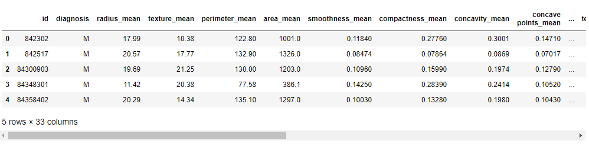
Menampilkan ringkasan dataset serta menghilangkan kolom yang tidak berguna¶
# ringkasan dataset
data.info()Output:
<class 'pandas.core.frame.DataFrame'>
RangeIndex: 569 entries, 0 to 568
Data columns (total 33 columns):
id 569 non-null int64
diagnosis 569 non-null object
radius_mean 569 non-null float64
texture_mean 569 non-null float64
perimeter_mean 569 non-null float64
area_mean 569 non-null float64
smoothness_mean 569 non-null float64
compactness_mean 569 non-null float64
concavity_mean 569 non-null float64
concave points_mean 569 non-null float64
symmetry_mean 569 non-null float64
fractal_dimension_mean 569 non-null float64
radius_se 569 non-null float64
texture_se 569 non-null float64
perimeter_se 569 non-null float64
area_se 569 non-null float64
smoothness_se 569 non-null float64
compactness_se 569 non-null float64
concavity_se 569 non-null float64
concave points_se 569 non-null float64
symmetry_se 569 non-null float64
fractal_dimension_se 569 non-null float64
radius_worst 569 non-null float64
texture_worst 569 non-null float64
perimeter_worst 569 non-null float64
area_worst 569 non-null float64
smoothness_worst 569 non-null float64
compactness_worst 569 non-null float64
concavity_worst 569 non-null float64
concave points_worst 569 non-null float64
symmetry_worst 569 non-null float64
fractal_dimension_worst 569 non-null float64
Unnamed: 32 0 non-null float64
dtypes: float64(31), int64(1), object(1)
memory usage: 146.8+ KBbisa dilihat dari hasil output diatas ada kolom yang tidak bernama ("Unnamed") akan kita hilangkan, serta menghilangkan kolom yang tidak berguna yaitu kolom ()"id") :
#menghapus kolom yang tidak berguna
#menghapus kolom "id"
data.drop("id",axis=1,inplace=True)
#menghapus the "Unnamed: 32" column
data.drop("Unnamed: 32",axis=1,inplace=True) #hasil
data.info()Output:
bisa dilihat kolom "id" dan kolom yang tidak mempunyai nama "unnamed" telah hilang
<class 'pandas.core.frame.DataFrame'>
RangeIndex: 569 entries, 0 to 568
Data columns (total 31 columns):
diagnosis 569 non-null object
radius_mean 569 non-null float64
texture_mean 569 non-null float64
perimeter_mean 569 non-null float64
area_mean 569 non-null float64
smoothness_mean 569 non-null float64
compactness_mean 569 non-null float64
concavity_mean 569 non-null float64
concave points_mean 569 non-null float64
symmetry_mean 569 non-null float64
fractal_dimension_mean 569 non-null float64
radius_se 569 non-null float64
texture_se 569 non-null float64
perimeter_se 569 non-null float64
area_se 569 non-null float64
smoothness_se 569 non-null float64
compactness_se 569 non-null float64
concavity_se 569 non-null float64
concave points_se 569 non-null float64
symmetry_se 569 non-null float64
fractal_dimension_se 569 non-null float64
radius_worst 569 non-null float64
texture_worst 569 non-null float64
perimeter_worst 569 non-null float64
area_worst 569 non-null float64
smoothness_worst 569 non-null float64
compactness_worst 569 non-null float64
concavity_worst 569 non-null float64
concave points_worst 569 non-null float64
symmetry_worst 569 non-null float64
fractal_dimension_worst 569 non-null float64
dtypes: float64(30), object(1)
memory usage: 137.9+ KBKemudian kita lihat lagi kolom beserta 5 data pertama:
# 5 baris pertama
data.head(5)
Output:
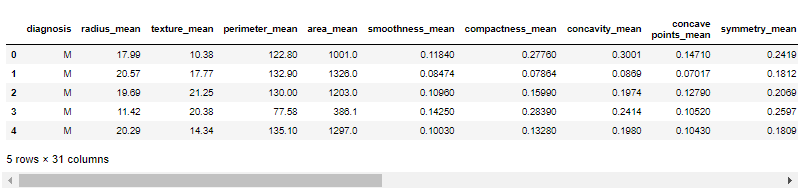
Mengganti class M dan B menjadi 0 dan 1¶
diagnosis adalah variabel yang bertanggung jawab untuk klasifikasi disini kita mengganti M dan B masing-masing dengan 1 dan 0
#diagnosis adalah variabel yang bertanggung jawab untuk klasifikasi
#mengganti M dan B masing-masing dengan 1 dan 0
data.diagnosis=data.diagnosis.map({'M':1,'B':0})Kemudian kita hitung berapa banyak jumlah masing- masing feature
#menghitung variabel diagnosis
data.diagnosis.value_counts()output:
0 357
1 212
Name: diagnosis, dtype: int64Membagi data 30% sebagai data testing dan 70% sebagai data training¶
# preprocessing dataset selesai
#splitting dataset ke training dan testing
train, test = train_test_split(data, test_size = 0.3,random_state=1234)#mencari hasil
print(train.shape)
print(test.shape)(398, 31)
(171, 31)Membuat variabel independen dan responsible¶
variabel independen dan responsible nantinya akan digunakan dalam proses prediksi
variable independen mengambil dari semua kolom dan variable responsible dari diagnosis
#membuat variabel independen untuk training
train_X = train.iloc[:, 1:31]
#membuat variabel responsible untuk training
train_y=train.diagnosis
#membuat variabel independen untuk testing
test_X= test.iloc[:, 1:31]
#membuat variabel responsible untuk ttesting
test_y =test.diagnosiskita cek dulu berapa jumlahnya
#mencari hasil
print(train_X.shape)
print(train_y.shape)
print(test_X.shape)
print(test_y.shape)output:
(398, 30)
(398,)
(171, 30)
(171,)Seleksi Fitur untuk visualisasi Decision tree¶
dilangkah atas sudah ada seleksi fitur untuk perhitungan decision tree , dilangkah ini seleksi fitur digunakan untuk melengkapi komponen visualisasi decision tree yang dilangkah selanjutnya
feature_cols = ["radius_mean","texture_mean","perimeter_mean","area_mean","smoothness_mean","compactness_mean","concavity_mean","concave points_mean","symmetry_mean","fractal_dimension_mean","radius_se","texture_se","perimeter_se","area_se","smoothness_se","compactness_se","concavity_se","concave points_se","symmetry_se","fractal_dimension_se","radius_worst","texture_worst","perimeter_worst","area_worst","smoothness_worst","compactness_worst","concavity_worst","concave points_worst","symmetry_worst","fractal_dimension_worst",]
X = data[feature_cols] # mengambil Features
y = data.diagnosis # Target variableDecision Tree Classifier dengan criterion information gain¶
model_entropy= DecisionTreeClassifier(criterion="entropy",random_state=1234)
#learning
model_entropy.fit(train_X,train_y)
#Prediksi
prediction_entropy=model_entropy.predict(test_X)
#mengevaluasi(Accuracy)
print("Accuracy:",metrics.accuracy_score(prediction,test_y))
#evaluation(Confusion Metrix)
print("Confusion Metrix:\n",metrics.confusion_matrix(prediction,test_y))Output:
Accuracy: 0.9298245614035088
Confusion Metrix:
[[99 6]
[ 6 60]]Visualisasi Decision Tree dengan criterion information gain¶
dot_data = StringIO()
export_graphviz(model_entropy, out_file=dot_data,
filled=True, rounded=True,
special_characters=True,feature_names = feature_cols,class_names=['M','L'])
graph = pydotplus.graph_from_dot_data(dot_data.getvalue())
graph.write_png('entropy.png')
Image(graph.create_png())Output:
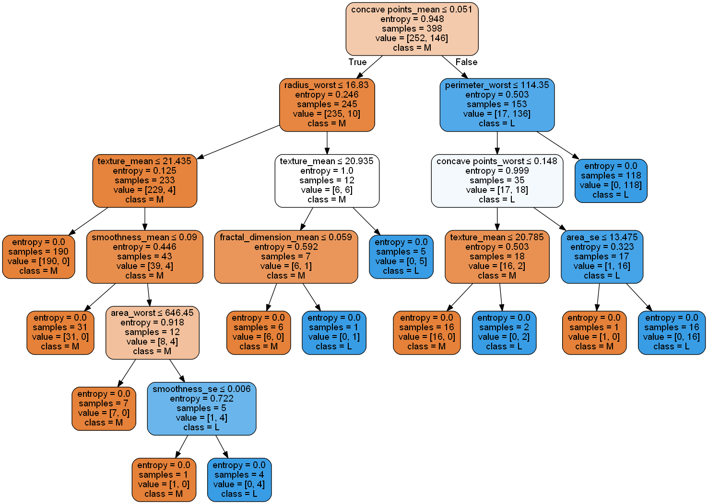
Decision Tree Classifier dengan criterion gini index¶
model_gini= DecisionTreeClassifier(criterion="gini",random_state=1234)
#learning
model_gini.fit(train_X,train_y)
#Prediksi
prediction_gini=model_gini.predict(test_X)
#mengevaluasi(Accuracy)
print("Accuracy:",metrics.accuracy_score(prediction,test_y))
#evaluation(Confusion Metrix)
print("Confusion Metrix:\n",metrics.confusion_matrix(prediction,test_y))Output:
Accuracy: 0.9298245614035088
Confusion Metrix:
[[99 6]
[ 6 60]]Visualisasi Decision Tree dengan criterion gini index¶
dot_data = StringIO()
export_graphviz(model_gini, out_file=dot_data,
filled=True, rounded=True,
special_characters=True,feature_names = feature_cols,class_names=['M','L'])
graph = pydotplus.graph_from_dot_data(dot_data.getvalue())
graph.write_png('gini.png')
Image(graph.create_png())Output:
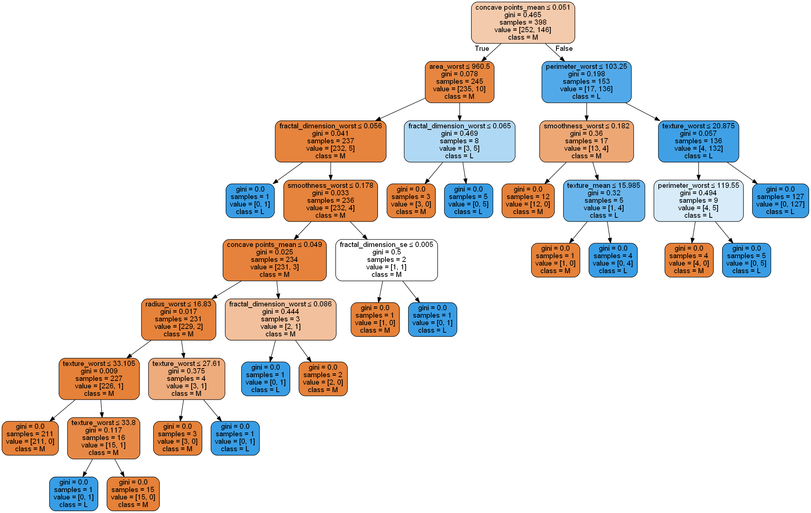
Menampilkan Hasil Prediksi Data testing¶
Pada langkah ini kita menampilkan hasil prediksi dari data testing dan hasil prediksi menggunakan information gain dan gini index.
menampilan semua feature datates dan hasil prediksi menggunakan information gain dan gini index.
datatest=pd.DataFrame(test_X)
datatest['diagnosis']=test_y
datatest['hasil prediksi entropy']=prediction_entropy
datatest['hasil prediksi gini']=prediction_gini
print(datatest)Output:
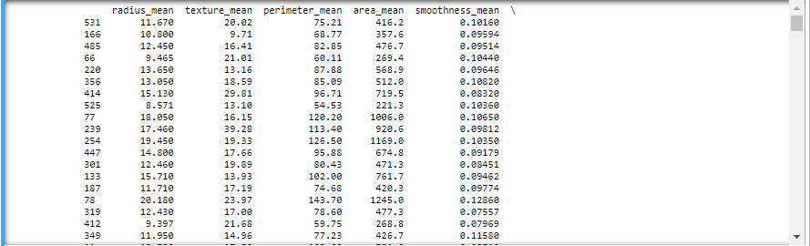
selajutnya kita akan mensederhanakan agar lebih enak dilihat dengan hanya menampilkan diagnosis, dan hasil prediksi menggunakan information gain dan gini index.
final=pd.DataFrame({"diagnosis":test_y,"hasil prediksi entropy":prediction_entropy,"hasil prediksi gini":prediction_gini})
print(final)Output:
diagnosis hasil prediksi entropy hasil prediksi gini
531 0 0 0
166 0 0 0
485 0 0 0
66 0 0 0
220 0 0 0
356 0 0 0
414 1 1 1
525 0 0 0
77 1 1 1
239 1 1 1
254 1 1 1
447 0 0 0
301 0 0 0
133 0 0 0
187 0 0 0
78 1 1 1
319 0 0 0
412 0 0 0
349 0 0 0
11 1 1 1
240 0 0 0
29 1 1 1
302 1 1 1
521 1 1 1
373 1 1 1
481 0 0 0
100 1 1 1
304 0 0 0
159 0 0 0
360 0 0 1
.. ... ... ...
202 1 1 1
435 1 1 1
375 0 0 0
47 1 1 0
497 0 0 0
13 1 1 1
221 0 0 0
22 1 1 1
255 1 0 1
109 0 0 0
348 0 0 0
129 1 1 1
152 0 1 0
67 0 0 0
213 1 1 1
495 0 0 1
517 1 1 1
219 1 1 1
290 0 0 0
488 0 0 0
309 0 0 0
6 1 1 1
405 0 0 0
452 0 0 0
54 1 1 1
305 0 0 0
560 0 1 1
285 0 0 0
355 0 0 0
329 1 1 1
[171 rows x 3 columns]
Untuk notebook bisa dilihat disini atau bisa diunduh disini
Referensi¶
-
Mayu Shinohara. 2017., Hyper Parameters Tuning of DTree,RF,SVM,kNN di https://www.kaggle.com/mayu0116/hyper-parameters-tuning-of-dtree-rf-svm-knn
-
sklearn.tree.DecisionTreeClassifier. di https://scikit-learn.org/stable/modules/generated/sklearn.tree.DecisionTreeClassifier.html
-
Avinash Navlani. 2018. ,Decision Tree Classification in Python di https://www.datacamp.com/community/tutorials/decision-tree-classification-python
-
Dafni Sidiropoulou Velidou., 2018. Interactive Visualization of Decision Trees with Jupyter Widgets di https://towardsdatascience.com/interactive-visualization-of-decision-trees-with-jupyter-widgets-ca15dd312084
-
Rishabh Jain., 2017. Decision Tree. It begins here. di https://medium.com/@rishabhjain_22692/decision-trees-it-begins-here-93ff54ef134
-
Decision Tree - Classification dihttps://www.saedsayad.com/decision_tree.htm